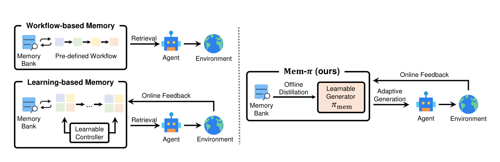
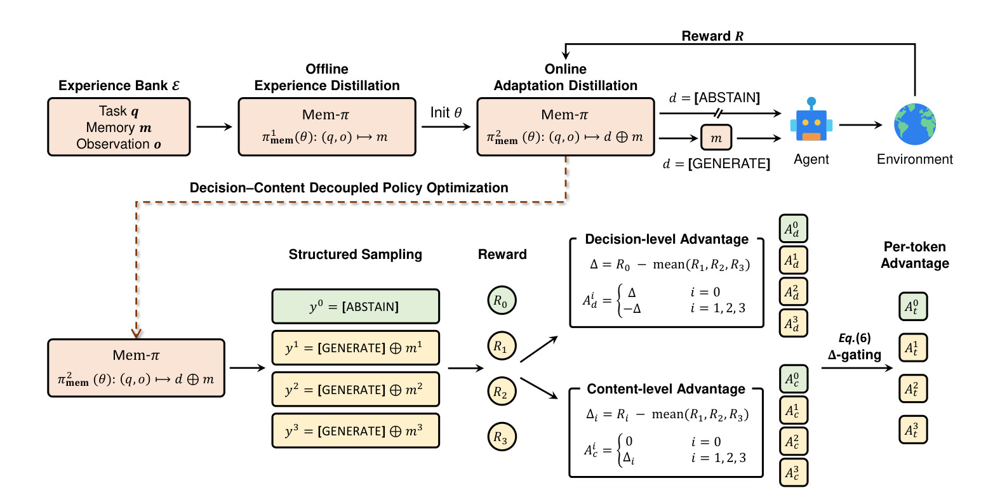
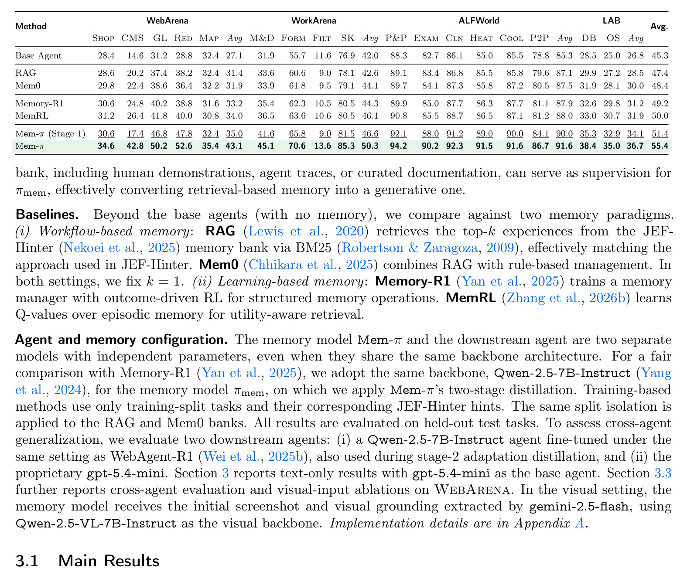
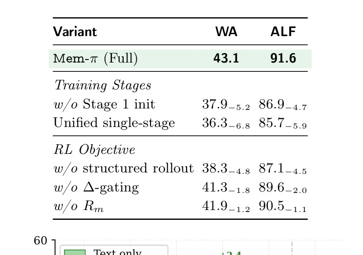

Mem-π：Adaptive Memory through Learning When and What to Generate
这里精读一篇 2026-05-20 提交到 arXiv 的论文《Mem-π: Adaptive Memory through Learning When and What to Generate》。中文可以叫《通过学习何时生成、生成什么来实现自适应记忆》。
论文链接：arXiv:2605.21463
作者：Xiaoqiang Wang, Chao Wang, Hadi Nekoei, Christopher Pal, Alexandre Lacoste, Spandana Gella, Bang Liu, Perouz Taslakian
机构/团队：ServiceNow AI Research / Mila / Université de Montréal / Polytechnique Montréal / McGill University / CIFAR AI Chair。
公开日期：2026-05-20，来源：arXiv cs.CL / cs.AI，arXiv ID：2605.21463。
代码/项目页：PDF 与 arXiv 页面本轮未核验到独立代码仓库。
0. 导读
Mem-π 讨论的是 LLM Agent 长期记忆中一个很容易被低估的问题：记忆不一定应该被“检索”出来，也不一定每次都应该被使用。很多记忆增强 Agent 会把过去轨迹、经验总结或技能片段放进外部 memory bank，然后按相似度召回。这个范式在任务重复、上下文高度相似时有效，但在真实工具使用、网页操作和具身交互里，经常会出现“相似但不适用”的记忆：过去任务的页面结构、商品编号、过滤条件或执行顺序与当前任务只差一点点，检索系统却会把旧提示原样塞进 prompt，反而干扰 Agent。
这篇论文的核心判断是，把 memory 看成静态条目的相似度检索过于粗糙。更合适的做法是训练一个独立的 generative memory policy：它接收当前 Agent 上下文，先判断这次是否需要记忆指导，再生成一段面向当前任务的 concise guidance。这个策略模型和下游 Agent 分离，不直接替代 Agent 的行动决策，而是作为“何时给提示、给什么提示”的可学习控制器。
它和推荐系统、个性化大模型的关系很直接。推荐系统里的用户长期兴趣、RAG 里的用户偏好、Agent 里的任务经验，本质上都是跨会话状态。Mem-π 的启发是：长期状态不应只被动匹配，还应具备选择性、生成性和 abstention 能力。对于个性化推荐或购物助手，真正有用的不是把历史行为全文召回，而是根据当前目标生成一条恰当、不过度干预的偏好或操作指导。
1. 背景与问题
长期记忆系统的常见流程是写入、检索和更新。episodic memory 保存历史轨迹，skill library 保存可复用操作，RAG memory 保存文本片段。它们共同依赖一个假设：只要相似度足够高，被检索出的记忆就能帮助当前任务。Mem-π 对这个假设提出了挑战。Agent 任务里的“有用性”不是纯语义相似，而是依赖当前页面、目标、状态、约束和可行动性。同样是订餐、购物或后台操作，过去经验中可复用的是流程结构，而不是具体字段值；如果检索条目把旧实体和旧条件带入，Agent 容易产生错误点击或错误填写。
论文把这个问题转成两个决策。第一是 when：当前上下文下是否应该产生记忆指导。很多简单任务本来就能被 base agent 解决，额外 guidance 会增加 token、引入偏置，甚至把 Agent 拉向错误轨迹。第二是 what：如果确实需要记忆，应该生成什么粒度、什么形式、什么内容。静态检索条目通常携带过去任务的局部细节；生成式策略可以抽象出更适合当前任务的 procedure，比如“先检查筛选条件，再按价格排序，最后核对库存”，而不是复制旧任务中的商品名。
这也是 Mem-π 相比普通 memory RAG 的重要差异。RAG 强在把外部信息拿进上下文，但它并不天然判断“这条信息是否应被使用”。Mem-π 用一个专门训练的 policy 来学习 abstain 与 generate，使 memory 不只是信息源，而是可优化的行动辅助模块。论文选择 web navigation、terminal-based tool use 和 text-based embodied interaction 作为评测场景，也说明它关注的是可执行 Agent，而不是普通问答式记忆。
对推荐系统而言，这个问题可以类比为用户画像的使用时机。长期偏好并不是每次排序都要强行注入；当用户当前意图清晰、任务短平快时，过强的长期画像可能造成过拟合和探索不足。当用户意图模糊或任务复杂时，画像又能补充上下文。Mem-π 提供了一个可迁移思想：把“是否用记忆”和“如何表达记忆”做成可学习模块，而不是在召回阶段硬编码。
2. 核心方法
Mem-π 的核心对象是一个独立的 memory policy，论文记作 πmem。它不是下游 Agent 本身，也不是简单向量库，而是一个语言模型或视觉语言模型。输入是当前 Agent context，包括任务目标、历史行动、可用工具状态，以及在网页任务中可选的视觉截图。输出是两类结果：一类是 abstain，表示不产生记忆；另一类是生成一段短指导，作为额外上下文交给下游 Agent。
训练上，论文采用两阶段思路。第一阶段是 Experience Distillation，从离线 experience bank 中蒸馏可复用经验。这个经验库来自已有 Agent 轨迹和 hint 生成器，把成功执行流程压缩成短程序性提示。这个阶段让 πmem 先具备“能生成像样指导”的能力，避免后续强化学习冷启动时只学到空输出或模板化输出。
第二阶段是 Adaptation Distillation，目标是让 memory policy 学会在当前任务上选择何时输出、输出什么。论文强调 decision-content decoupled reinforcement learning objective，也就是把是否生成与生成内容的质量拆开优化。这样的设计很重要，因为如果只按最终任务成功率训练，模型可能学会总是输出，靠更多 token 提高偶然成功；也可能因为早期生成质量差而学会总是 abstain。决策与内容解耦后，策略更容易学到“困难任务给指导，简单任务少打扰”的行为。
从系统接口看，Mem-π 与下游 Agent 的关系很清晰。下游 Agent 仍然负责浏览器点击、终端命令或环境交互；Mem-π 只负责在合适时机生成 guidance。这个边界使它可插入不同 base agent，也能做 cross-agent transfer。论文实验里不仅看训练时 Agent，还看迁移到更强 base agent 后是否仍有收益，说明作者意识到 memory 模块不能和单一执行器过度耦合。
方法的关键不是“又训练一个模型”这么简单，而是把长期记忆系统中的三个隐式选择显式化：是否使用记忆、如何把过去经验改写成当前指导、如何控制记忆 token 预算。以前这些选择常由相似度阈值、prompt 模板或人工规则决定；Mem-π 把它们变成可学习 policy，并用任务成功信号做反馈。
3. 图表解读

图 1 对比了三类记忆系统。左侧 workflow-based memory 依赖预定义检索和更新流程，中间 learning-based memory 尝试联合优化 memory operation，右侧 Mem-π 则把记忆变成生成式策略。这个图证明的不是某个指标，而是问题重构：记忆不再只是“存什么、取什么”，而是“当前 Agent 是否需要额外指导、如何生成适配当前任务的指导”。对工程系统来说，这意味着 memory 模块要有自己的输入输出契约和失败监控，不能只把向量库召回接到 prompt 前面。

图 2 是 Mem-π 的训练与使用总览。上半部分展示 Experience Distillation，从离线经验库学习生成可复用提示；下半部分展示 Adaptation Distillation，通过下游任务反馈学习 abstention 与 guidance quality。这个图最值得注意的是两个蒸馏阶段的分工：第一阶段解决内容能力，第二阶段解决上下文适配和使用时机。若直接端到端训练，很容易因为奖励稀疏而不稳定；若只有第一阶段，模型又会像普通 hint generator 一样不知何时闭嘴。

表 1 是主结果，比较 base agent、检索式 memory 和 Mem-π 在多个 Agent benchmark 上的成功率。论文摘要中明确说 Mem-π 在 web navigation 上相对提升超过 30%，表中也显示它在 WebArena 多个子域有明显增益。这里的关键不是单个绝对数字，而是跨任务一致性：网页、终端和文本具身环境的状态空间不同，若生成式记忆仍能稳定提升，说明它学习到的是更一般的上下文指导能力，而不是某个页面模板。

表 2 展示消融。去掉第一阶段初始化、去掉第二阶段适配或把训练合并，都会降低效果。这说明 Mem-π 的收益不是来自“多一个模型”或“多一些提示”，而来自内容生成能力与决策策略的配合。对推荐系统迁移也一样：先学到可复用偏好表达，再学会在当前请求中选择性使用，通常比直接把所有历史摘要塞进生成模型更稳。
4. 实验与结果
论文评估覆盖 WebArena、WorkArena、ALFWorld 和 LAB 等 Agent 场景，base agent 包括较强的语言模型执行器。主指标是任务成功率，同时关注 memory token 使用和跨 Agent 迁移。摘要给出的核心结果是，在 web navigation 任务上 Mem-π 相对检索式和既有 RL memory baseline 有超过 30% 的相对提升；PDF 表格进一步展示了它在多个子域上的稳定领先，例如 Reddit、CMS 等需要导航与状态判断的任务提升较大。
消融实验说明两个阶段都必要。没有 Experience Distillation，策略缺少可用的经验表达，RL 阶段容易在稀疏奖励中低效探索；没有 Adaptation Distillation，模型会生成看似合理但未必适配当前上下文的提示；统一训练下降最大，说明把“会写提示”和“会决定是否写提示”混在一起会增加优化难度。视觉观察实验也很有信息量：在 WebArena 中加入 screenshot 视图能带来额外收益，说明 memory policy 不只是读文本任务描述，也能利用页面状态判断指导是否适用。
论文还看了 token efficiency。Mem-π 平均使用的 memory token 少于一些 always-on 或 retrieval-heavy 方法，同时取得更高成功率。这个结果对线上 Agent 尤其重要，因为 Agent 的成本不只来自模型调用次数，还来自 prompt 长度、工具交互次数和失败重试。一个会 abstain 的 memory policy 可以在简单任务里少用 token，在困难任务里集中投入。
需要注意，论文主要证明的是任务成功率和效率上的实验收益，并不等于所有长期记忆任务都能直接受益。评测场景虽然多样，但仍然是 benchmark 环境；真实产品中的用户偏好、隐私约束、页面变化和长期分布漂移会复杂得多。尤其当 memory policy 生成错误提示时，错误可能比检索噪声更隐蔽，因为生成文本看起来更自然、更像“理解了当前任务”。
5. 我的理解
我认为 Mem-π 的价值在于，它把长期记忆从“外部数据库问题”推进到了“策略控制问题”。过去很多 Agent memory 工作围绕存储结构、检索相似度、摘要更新展开，默认 memory 只要相关就有用。Mem-π 更接近真实工作流：有些记忆应该被抽象，有些应该被改写，有些应该完全不用。这个判断很像推荐系统中的特征门控和多兴趣选择，关键是控制信号本身要可学习、可评估。
这篇论文也提醒我们，个性化大模型不能只靠更长上下文。长上下文能容纳更多历史，但不会自动判断历史中哪部分与当前任务有关。相似度检索能缩小范围，但仍然可能拿到相似而错误的经验。生成式 memory policy 的优势是可以把过去经验重新表述成当前可执行提示，例如把“上次在某页面点击 A 按钮”变成“先查找当前页面中的筛选入口，再用任务约束确认字段”。这种抽象能力比原文召回更适合工具使用。
可能被高估的地方是训练成本和数据闭环。Mem-π 需要离线经验库，需要任务轨迹，需要可计算的成功信号，还需要独立模型训练。对于很多业务系统，短期内可能没有足够高质量轨迹支持这种训练。更现实的落地路径是先用规则或弱模型实现 abstain/generate，再逐步收集成功与失败轨迹，最后训练专门 policy。
从推荐角度，我会把 Mem-π 看成“用户画像生成器”的一种未来形态。它不是返回 top-k 历史兴趣，而是根据当前请求生成一段任务级偏好指导，并且可以选择不生成。比如购物助手面对“帮我找一件通勤外套”时，系统可以生成“用户过去偏好深色、可机洗、预算中档，但本次未提品牌，不要强行限定品牌”；面对明确搜索“某型号充电器”时则 abstain。这比把历史购买记录全部展开更像可控个性化。
6. 工程启发与复现建议
最小复现不必先训练完整 Mem-π。可以先建立一个任务轨迹库，每条记录包含任务目标、关键状态、成功流程、失败原因和可复用提示。随后实现一个轻量决策器，输入当前任务和候选经验，输出三类结果：不用记忆、直接使用抽象经验、生成改写后的当前指导。评估指标不要只看任务成功率，还要看额外 token、工具调用次数、失败重试次数和错误提示占比。
如果用于推荐或 RAG，可以把用户历史切成“事实记忆、偏好记忆、流程记忆”三类。事实记忆适合检索，偏好记忆适合生成短指导，流程记忆适合 Agent 操作。训练或评估时要专门构造冲突样本，例如用户过去喜欢 A 但当前明确要求 B，系统应该遵从当前意图而不是长期偏好。Mem-π 的 abstention 思路也可以迁移为“不使用画像”的显式动作。
部署时需要三层保护。第一，memory policy 的输出应短而可审计，不能生成大量未经验证的事实。第二，guidance 应和下游 Agent 的工具协议绑定，例如只允许生成流程建议，不允许直接生成账号、价格、库存等易变事实。第三，要记录 guidance 是否被使用、使用后是否成功，以便后续做在线校准。没有这类 telemetry，生成式记忆会变成难以排查的隐性 prompt 变更。
7. 局限与风险
- 训练依赖高质量任务轨迹和经验库。没有足够成功轨迹时，policy 可能只学会模板化提示，不能真正适配当前上下文。
- 生成式记忆会引入幻觉风险。检索式 memory 至少可以追溯原条目，生成式 guidance 若把旧实体改写错，错误更难定位。
- benchmark 成功率不等于生产稳定性。真实网页、业务系统和用户意图会持续变化，abstention 阈值和生成策略都需要重新校准。
- 隐私和安全边界更复杂。长期记忆可能包含用户偏好、账号行为或企业内部流程，生成策略必须避免把敏感信息带到无关任务。
- 成本收益依赖任务难度分布。若大量任务很简单，额外训练和调用 memory policy 的收益可能不划算；若任务很难，错误 guidance 又会放大失败。
8. 后续跟进
- 跟进作者是否发布 experience bank 构造脚本、训练代码和 benchmark 配置，重点看 reward 与 abstention 的实现细节。
- 在本地 Agent 自动化中尝试一个小型 context guidance policy，记录它是否减少重复文件读取和工具调用。
- 构造 memory conflict 测试集，验证生成式 guidance 在当前指令与历史经验冲突时是否会正确 abstain。
- 关注同类工作与 PEEK、MemConflict、personalized RAG 的连接，判断长期记忆系统会走向检索、生成还是混合控制。